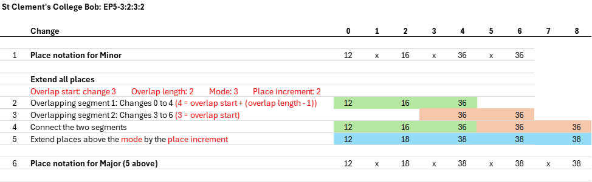

Appendix D3. Method Extension Process EP5 (DRAFT ONLY)
5.
Extension Process 5 (EP5)
EP5 enables extension by copying a section of a method's full place notation (rather than first dividing the place notation into hunt places, below places and above places) and then extending all places that are above the mode.
Prerequisites
- The Parent Method is a static method.
- The Parent Method does not use Jump Changes.
Steps
The steps to implement this Extension Process are shown using the following example where St Clement's College Bob Minor is the Parent Method. Further instructions on these steps are provided after the example.

Further instructions
-
4 parameters are selected:
- Overlap start: This determines the starting change of the section of the method's place notation that will be copied.
- Overlap length: This determines how many changes will be added to a half-lead of the method.
- Mode: This is defined in Appendix D.A.3.
- Place increment: This specifies how many places are added to the corresponding place in the parent method. For example, if the place increment is 2 and the parent method contains the place 5, then this place may become 7 (5 + 2) in the extension.
- The combination of overlap length and place increment determines the stage increment of the extension. If the method is Plain, the overlap length is 2, and the place increment is 2, then the extension will be 2 stages higher than the parent method (e.g. Minor extends to Major). If the method is Treble Dodging, the overlap length is 4, and the place increment is 2, then the extension will also be 2 stages higher than the parent method. Extension in stage increments greater than 2 can be achieved with different overlap length and place increment parameters. For example, to extend a treble dodging method in steps of 4 stages, use an overlap length of 8 and a place increment of 4.
- The method's place notation is then split into two overlapping segments based on the overlap start and overlap length parameters. These two segments are then joined. All places in the joined segments are then extended according to the mode and the place increment. Places that are less than or equal to the mode are left unchanged. All other places are increased by the place increment.
- Apply the same process above to the extension to obtains further extensions at higher stages.
Requirements
An Extension produced using EP4 is only valid if:
- The Extension has the same Symmetry (see Section 4.B) as the Parent Method.
- The Extension has the same number of Hunt Bells as the Parent Method, unless the Parent Method only has Hunt Bells and has no Working Bells, in which case the Extension also only has Hunt Bells.
-
The Extension has the same number of Cycles of Working Bells as the Parent Method.
- If the Parent Method comprises two or more Cycles of Working Bells of equal size, the Extension has this same feature.
-
If the Parent Method has Plain Bob Leadheads, the Extension also has Plain Bob Leadheads.
If the Parent Method does not have Plain Bob Leadheads, the Extension also does not have Plain Bob Leadheads. - The Extension Construction used, when applied to the Parent Method in question, creates an Extension Path containing a minimum of 3 Methods (including the Parent Method) with Stages that are less than or equal to Stage 24.
Extension Construction
-
The Extension Construction for referring to this Extension Process is:
EP5 - [Overlap start] : [Overlap length] : [Mode] : [Place increment] - The Extension Construction used in the example above is therefore EP5-3:2:3:2
Other considerations
- The example above uses an overlap length of 2 and a place increment of 2, giving an extension that is 2 stages higher that the parent since the hunt bell follows a plain path. If an overlap length of 4 and a place increment of 4 were used, the extension would be 4 stages higher than the parent.
- When the same results are obtained using different overlaps starts, designate the lowest start as the one that was used. This ensures that whatever Stage Method is taken as the Parent Method in a set of Methods that are on the same Extension Path, the same Extension Construction will result.
- When two or more different Modes give the same results, designate the lowest mode as the one that was used.
Non-pallindromic methods
- The example and descriptions above assume the Parent Method has Palindomic Symmetry about the Leadend Change and the Halflead Change. For non-Palindromic Methods, EP5 may be applied separately in both halves of the Plain Lead, subject to the following:
- If the method is a hunter and the Places Made below the hunt bell are Palindromic, or the Places Made above the hunt bell are Palindromic, then an Extension Construction is selected that retains that symmetry in the Extension.
- Furthermore, if the Places Made above the hunt bell in the first half of the Plain Lead have Rotational Symmetry with the Places Made below the hunt bell in the second half of the Plain Lead, or the Places Made below the hunt bell in the first half of the Plain Lead have Rotational Symmetry with the Places Made above the hunt bell in the second half of the Plain Lead, then an Extension Construction is selected that retains that symmetry in the Extension.
-
An example of an Extension Construction for a non-Palindromic Method is EP5-3:2:3:2/9:2:3:2
The sections are respectively:
- Parameters for the first half lead
- Parameters for the second half lead